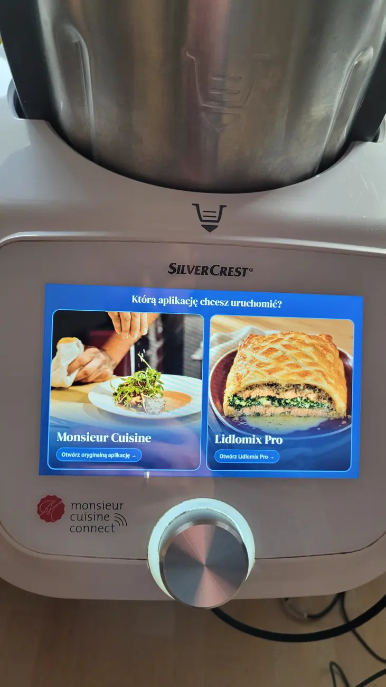

Monsieur Cuisine Connect · SKMC 1200 B2
Technikalia
Uruchomienie Lidlomix Pro na Connect wymagało dostępu do Androida i przygotowania ekranu wyboru aplikacji. Odczyty czujników i działanie aplikacji sprawdzono na urządzeniu.
1. Dostęp do Androida
Punktem wyjścia był poradnik Lidlomix-Hack autorstwa wpm-mh dla Connect Trend. Pokazał, że przez port serwisowy można uruchomić środowisko odzyskiwania TWRP i włączyć ADB, czyli komunikację komputera z Androidem. Procedurę sprawdzono na Connect SKMC 1200 B2 z Androidem 6.0.
Gniazdo jest od spodu robota, pod klapką mocowaną jedną śrubą. Oba porty wyglądają podobnie. Przewód z dwoma męskimi wtykami USB‑A należy podłączyć wyłącznie do portu oznaczonego „Android USB”. Podłączenie do sąsiedniego portu „USB” może uszkodzić urządzenie.
- Po podłączeniu do Windows wykonano pełną kopię pamięci w SP Flash Tool. Zgodność dwóch odczytów obszaru rozruchowego zweryfikowano przed dalszą pracą.
- Tymczasowo uruchomiono TWRP i zmieniono konfigurację USB, żeby Android udostępniał ADB. Następnie przywrócono fabryczny obraz rozruchowy.
- Po ponownym uruchomieniu zatwierdzono połączenie z komputerem na ekranie robota. ADB umożliwiło instalowanie i aktualizowanie aplikacji.
Zobacz zdjęcie portów i zrzut kopii zapasowej


2. Jeden ekran startowy, dwie aplikacje
Dodano osobny launcher, czyli ekran startowy Androida. Otwiera fabryczne Monsieur Cuisine albo Lidlomix Pro. Powrót do wyboru działa gestem od prawej krawędzi, co pozwala przełączyć aplikację bez wyłączania robota.
W testach fabryczne odliczanie do uśpienia potrafiło wygasić ekran już po przejściu do Pro. Poprawiono przełączanie. Gdy robot stoi, wyjście z fabrycznego interfejsu kończy odliczanie, a usługa sprzętowa nadal udostępnia odczyty czujników.

3. Aplikacja napisana od podstaw w Rust
Silnik Lidlomix Pro i jego interfejs napisano od podstaw w Rust, bez użycia kodu źródłowego fabrycznych aplikacji Connecta ani Smarta. Znajome elementy układu ułatwiają obsługę. Zaimplementowano programy, katalog offline i prowadzenie przez przepisy. Do odczytów czujników Pro komunikuje się z usługą sprzętową robota.
Inspiracją było podejście zespołu ArtCraft, który buduje własne aplikacje z interfejsami znajomymi dla użytkowników. Rust umożliwia kontrolę zużycia pamięci i wykrywanie części błędów przy kompilacji. Na starym Connect liczyła się też praca z jego grafiką. Dostosowano renderowanie do układu Mali‑400, żeby aplikacja poprawnie wyświetlała interfejs. PhotoCraft zespołu ArtCraft · O języku Rust
Fabryczna przeglądarka z Androida 6 nie radziła sobie w testach z logowaniem do ChatGPT. Aktualny Chrome wymaga Androida 10 lub nowszego. Przepis można przygotować na telefonie i wysłać gotowy plik JSON do robota przez lokalne Wi‑Fi. Testy przeglądarek na Smarcie wymagają egzemplarza testowego. Wymagania Chrome
Co pokazała waga
W testach płytka sterująca Connecta raportowała wagę w krokach co 5 g i taką rozdzielczość pokazuje Lidlomix Pro. Na Smarcie zależy to od wersji sprzętu. Instrukcja SKMS 1200 C1 podaje krok 1 g, a SKMS 1200 A1 opisuje ważenie co 5 g. Instrukcja C1 · Instrukcja A1
Po rozpoznaniu Smarta aplikacja pokazuje wybór kroku 1 g lub 5 g. Potwierdzenie odczytu co 1 g dla poszczególnych wersji wymaga testów na fizycznych egzemplarzach. W aktualnej wersji Pro korzysta z odczytów płytki i przekazuje do niej polecenia sterujące w zgodnych trybach. Na Connect sprawdzono ważenie, obroty, temperaturę, odliczanie i interwały. Zobacz ważenie w przepisie
Co przyspieszył Codex
Codex, agent programistyczny OpenAI, wspierał analizę logów, przegląd kodu i pisanie testów odczytów czujników oraz reakcji programu na utratę sygnału. Działanie ekranu i sygnały płytki zweryfikowano na fizycznym Connect.